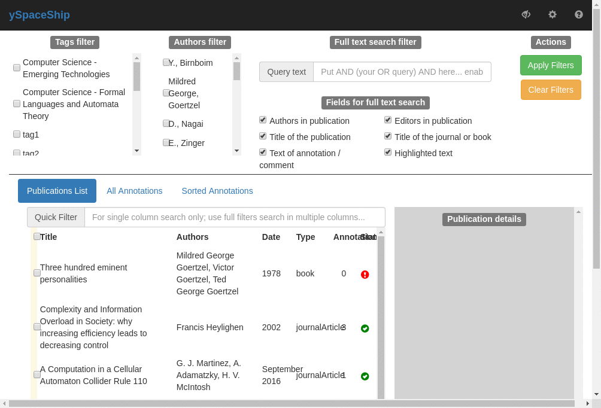
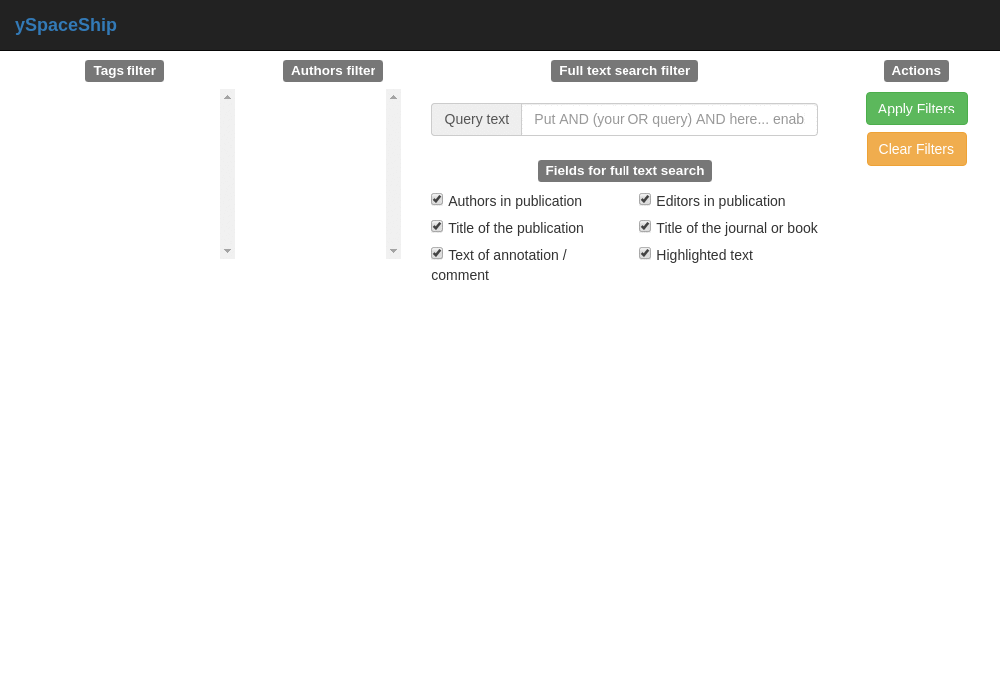
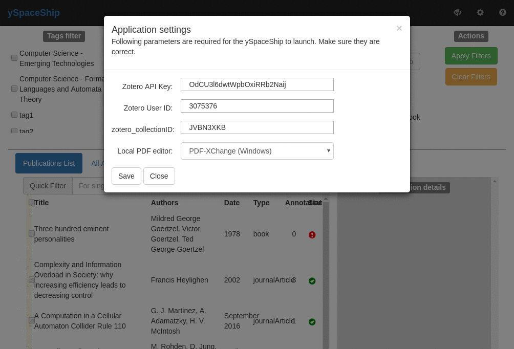
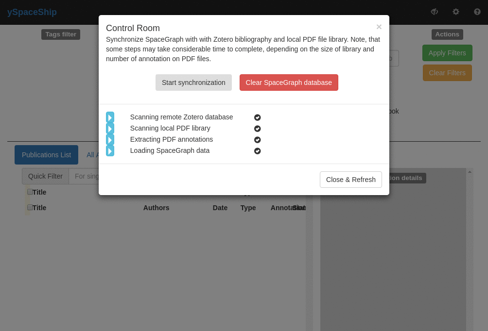

Features
This page documents in detail main features of the ySpaceShip available for the user via web interface. Note, that this section of documentation is compiled automagically from Cucumber BDD tests (i.e. features / scenarios written in Gherkin) -- therefore excuse it for strange bullet-point based style. Furthermore, features are 'documented' as sequences of screenshots the user should see following these bullet points in sequence (thanks to Selenium. The start of the sequence is marked by the little rocket. User interaction with the browser window (pressed buttons, etc.) are indecated by red rectangles.
Application management
The web interface is a window to the SpaceGraph -- the database where all publications and their annotations are stored. Application management feature allows to control what is loaded into space graph and some other options.
Scenario: open application management menu
The management menu is acceptable through the gear icon at top right of the window. It opens a menu to a few dialogs -- the exact number may vary as more management functions are added.
Given : the ySpaceShip is running
When : user presses gear icon
Then : application management menu is opened

Scenario: open application settings dialog
Application settings contain Zotero database configuration and pdf browser configuration
Given : the "management" menu is open
When : user chooses "application-settings-menu-item"
Then : "settings-form" is displayed
Scenario: open control room dialog
Control room dialogue allows to synchronize SpaceGraph with Zotero database and extract pdf annotations from PDF files.
Given : the "management" menu is open
When : user chooses "control-room-menu-item"
Then : "control-room" is displayed
Scenario: display help
User manual / help system is accessble via question-mark icon and opens as a separate web page.
Given : the ySpaceShip is running
When : user presses "help" icon
Then : user guide opens at page "Features · GitBook" in separate browser tab

Application settings
Users can manually input various application settings which will then be saved to configuration files. This is normally needed only for the first run of ySpaceShip. Settings used are the special purpose test database for ySpaceShip. Normally users will input credentials of their own Zotero bibliography database.
Scenario Outline: Input and save settings with defaults
Input settings of Zotero database but leave PDF editor default.
Given : "application-settings" dialogue is displayed
When : user inputs settings 'OdCU3l6dwtWpbOxiRRb2Naij', '3075376' and 'JVBN3XKB'
And : user presses "save-application-settings" button
Then : "application-settings" dialog closes
And : file
contains settings 'OdCU3l6dwtWpbOxiRRb2Naij', '3075376' and 'JVBN3XKB'
Scenario Outline: Input and save all settings
Change PDF editor for viewing files (normally needed because of different operating systems).
Given : "application-settings" dialogue is displayed
When : user selects "local_pdf_editor" as 'PDF-XChange (Windows)'
And : user presses "save-application-settings" button
Then : "application-settings" dialog closes
And : file "pbrain.conf" has "local_pdf_editor" value ''C:\Program Files\Tracker Software\PDF Viewer\PDFXCview.exe''

Scenario Outline: Input and save all settings
Change PDF editor for viewing files (normally needed because of different operating systems).
Given : "application-settings" dialogue is displayed
When : user selects "local_pdf_editor" as 'Okular (Linux)'
And : user presses "save-application-settings" button
Then : "application-settings" dialog closes
And : file "pbrain.conf" has "local_pdf_editor" value 'okular'
Control room
Users should be able to set and save application settings needed for it to run;
Scenario: Clear SpaceGraph Database
Given : "control-room" dialogue is displayed
When : user presses "clearSpaceGraph" button and waits for script to finish
Then : "clearSpaceGraph" button text is "SpaceGraph is empty.."
And : the spacegraph is cleared of all contents

Scenario: Synchronize graph
Given : "control-room" dialogue is displayed
Given : file
contains valid settings: When : user presses "synchronizeSpaceGraph" button and waits for script to finish
Then : "synchronizeSpaceGraph" button text is "Synchronized"
Filters and queries
The main functionality of ySpaceShip is the ability to search and filter publications and annotations by their properties and -- most importantly -- by their full text. A number of filter options exist in order to be able todisplay only the relevant content in the main info window.
Scenario: toggle filters view
Filters view occupies the upper part of the window and is by default open. The view can be toggled closed or open again at wish -- e.g. if more space is needed for navigating through publications and annotations.
Given : the ySpaceShip is running
Then : "library-navigation" is displayed
When : user presses "toggle-filters" (eye) icon
Then : "library-navigation" is hidden
When : user presses "toggle-filters" (eye) icon
Then : "library-navigation" is displayed
Scenario: "Filters enabled" mode
If filters are applied, user will see only a subset of annotations and publications. Therefore it is important to know at each moment if the filters have been applied and clear them in case full view of the database is needed.
Given : the ySpaceShip is running
When : user writes "whatever" to "full-text-query" input field
And : user presses "apply-filters" button and waits for no more than "2" seconds
Then : "filter-status" with "Filters enabled" is displayed
Then : user presses "clear-filters" button and waits for no more than "2" seconds
Then : "filter-status" with "Filters enabled" is NOT displayed

Scenario Outline: Full text query returns both publication and annotation
Users can search publications and annotations with full text queries, regular expressions and logic constructions -- as enabled by Elasticsearch server. Simply put sentence in quotes in order to search for exact phrase.
Given : the ySpaceShip is running
When : user writes 'information overload' to "full-text-query" input field
And : user presses "apply-filters" button and waits for no more than "1" seconds
Then : "publications-table" contains "1" row having "title" with 'information overload'
And : user presses "annotations-list-button" button
Then : "annotations-table" contains "1" row having "text" with 'information overload'
And : user presses "sorted-annotations-list-button" button
And : "sorted-annotations-table" contains "2" row having "text" with 'information overload'
Then : user presses "clear-filters" button and waits for no more than "1" seconds
Scenario Outline: Filter by tag
Users can filter publications by one or more tag which are listed at the top left corner of the window. Note that tags are combined with OR logical operators with other tags and filters -- so all publications which are taged with one or more of these tags are displayed.
Given : the ySpaceShip is running
When : user checks 'tag1' in "tags-list"
And : user presses "apply-filters" button and waits for no more than "1" seconds
Then : "publications-table" contains '3'
Then : user presses "clear-filters" button and waits for no more than "1" seconds
Scenario Outline: Filter by author
Users can filter publications by one or more tag which are listed at the top left corner of the window. Note that tags are combined with OR logical operators with other tags and filters -- so all publications which are taged with one or more of these tags are displayed.
Given : the ySpaceShip is running
When : user checks 'A. V., Kravtsov' in "authors-list"
And : user presses "apply-filters" button and waits for no more than "1" seconds
Then : "publications-table" contains '1'
Then : user presses "clear-filters" button and waits for no more than "1" seconds
Scenario Outline: Filter by publication
Sometimes it is needed to get all annotations of particular publication and simply browse them. If graph database is small (i.e. all annotations fit into the 'browser memory'), this can be done simply by going to 'sorted annotations' panel and finding the required publication there. Yet most of the time this is not possible and the filter on publication has to be applied first.
Given : the ySpaceShip is running
When : user checks 'A Computation in a Cellular Automaton Collider Rule 110' in "publications-table"
And : user presses "apply-filters" button and waits for no more than "1" seconds
And : user presses "annotations-list-button" button
Then : "annotations-table" contains '1'
And : user presses "sorted-annotations-list-button" button
Then : "sorted-annotations-table" contains '2'
Then : user presses "clear-filters" button and waits for no more than "1" seconds